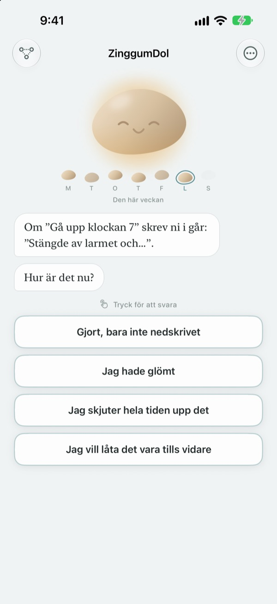
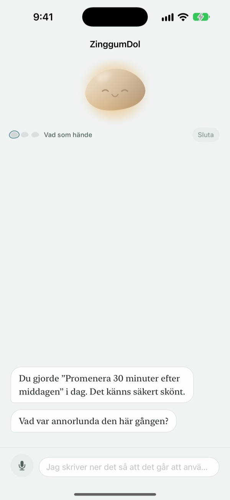
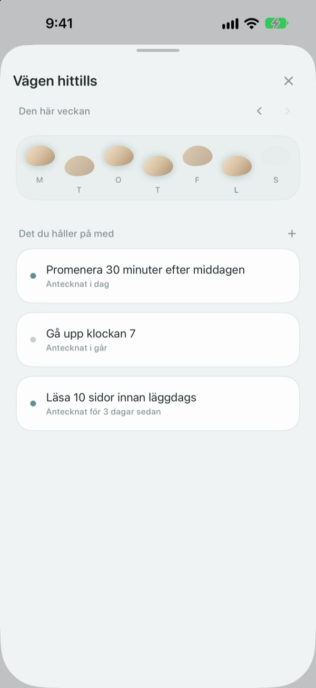
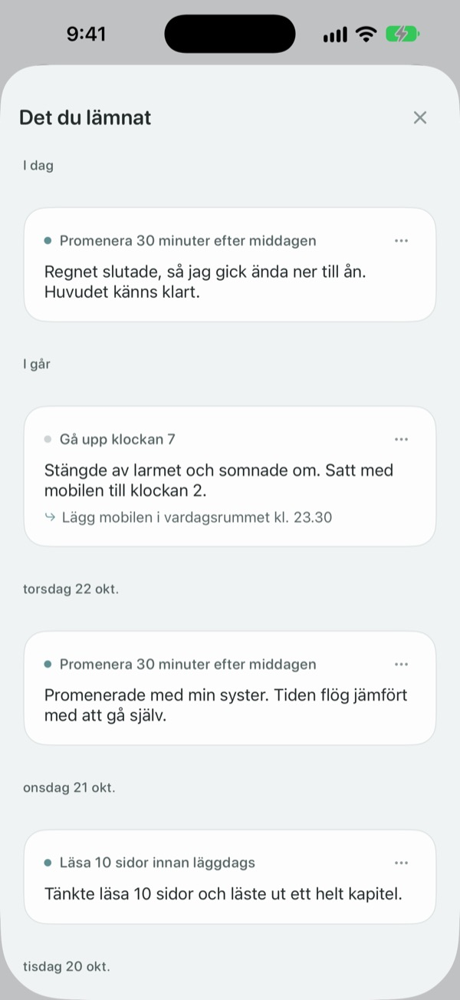

Ett snedsteg betyder inte
att du ramlat i bäcken
Den dag du missar ditt mål är det stenen som pratar först. Den frågar vad som hände, inte vad du gjorde fel, och ger dig tillbaka händelsen och känslan var för sig.
Samtal, anteckningar och din väg är gratis. Inget konto, ingen reklam.

Prata med stenen
Du tänkte ta en kvällspromenad i dag men blev inte av. Tryck på ett svar eller skriv ett eget, så svarar stenen precis som i appen.
Lägger du skulden på dig själv när dagen inte blir som tänkt?
Kvällen du hoppade över träningen är första tanken ofta ”vad är det för fel på mig?”. Tittar du närmare blev det övertid, det regnade och du var slut. ZinggumDol frågar vad som hände och hur du mår i olika steg och lägger dem bredvid varandra. När du ser att det var omständigheterna och inte din vilja blir nästa lilla steg lättare att hitta.
Stenen pratar först
Sätt ett mål så håller stenen koll på dagarna det gick och dagarna du fastnade. När en dag glider förbi frågar den ”vad hände?” i stället för ”varför inte?”, och den minns vad du berättade sist.
Dagar när det känns för tungt att skriva kan du säga det högt. Talet tolkas på enheten och inspelningar sparas aldrig.

Dina dagar som stenar över bäcken
Varje vecka ligger som en rad med stenar. Dagarna du inte klev på ligger också kvar; inget raderas.
Även med en lucka eller två ser du att vägen fortsätter.

Läs det du skrev igen
Vad som hände, hur du kände dig och vad du provar härnäst samlas i datumordning. Läs en dag när du fastnade på samma sätt och se vad som hjälpte.
En widget visar ett ord från stenen på hemskärmen, och en påminnelse på den tid du väljer bjuder in dig att se tillbaka på dagen.

Tre steg för att komma igång
- 1
Skriv ett mål
Till exempel ”Promenera 30 minuter efter middagen”.
- 2
Öppna appen när dagen är slut
Stenen frågar hur dagen var. Med en påminnelse glömmer du inte.
- 3
Tryck eller skriv ditt svar
Du kan sluta när som helst med
Jag vill låta det vara tills vidare.
Så går ett samtal till
- Vad som hände
- Bara fakta: vad som kom emellan
- Känsla
- Hur du mår just nu, på en skala med fem steg
- Se tillbaka
- Stenen ger dig händelsen och känslan var för sig
- Nästa steg
- Du väljer själv något litet, fem minuter räcker
- Avslutning
- En riktigt tung dag frågar den inget mer och föreslår vila
Du kan avbryta när som helst, och det du sagt hittills sparas.
Samtal och anteckningar är gratis. Pro om du vill ha mer.
Gratis
- Alla samtal med stenen
- Upp till tre mål
- Prata i stället för att skriva
- Din väg och allt du har skrivit
- Widget och daglig påminnelse
- Lås med kod
ZinggumDol Pro
- Så många mål du vill
- Välj bland sex stenytor
- Exportera anteckningar som textfil
Köp en gång och behåll. Ingen prenumeration.
Ingen betalskärm dyker upp mitt i ett samtal. På en ny enhet eller efter ominstallation trycker du på Återställ köp i Inställningar.
Vanliga frågor
Måste jag förklara varje missad dag?
Nej. Tryck på Jag vill låta det vara tills vidare när som helst så slutar samtalet direkt. Det du sagt sparas, så du kan fortsätta senare.
Jag gjorde det, men appen säger att jag inte gjorde det.
Tryck på Gjort, bara inte nedskrivet. Stenen tar emot rättelsen och frågar i stället vad som hjälpte. Det som fungerade sparas och kommer fram igen nästa gång du fastnar.
Vart tar det vägen som jag säger högt?
Ditt tal blir text på enheten och inspelningen sparas aldrig. På enheter som stöds putsas meningarna också så att de blir lättare att läsa, även det på enheten.
Hur många mål kan jag ha?
Tre gratis. När du är klar med ett mål använder du Släpp under Vägen hittills för att frigöra en plats. För fler än tre behöver du ZinggumDol Pro.
Är ZinggumDol Pro en prenumeration?
Nej. Du betalar en gång och behåller det. På en ny enhet eller efter ominstallation trycker du på Återställ köp i Inställningar.
Kan någon annan läsa min dagbok?
Det finns inget konto. Dina anteckningar finns bara på din enhet och i ditt eget iCloud, och du kan låsa appen med en kod i Inställningar. Det du skriver skickas aldrig till utvecklaren. Anonym användningsstatistik kan du stänga av i Inställningar.
Hur ändrar jag tiden för påminnelsen?
Under Daglig påminnelse i Inställningar slår du på eller av den och väljer tid.
Påminner stenen mig om sånt som gick bra?
Ja. Den minns vad som hjälpte dig, och en tung dag påminner den om något du nyligen klarade.
Hur raderar jag allt?
Tryck på Radera alla anteckningar i Inställningar. Mål och anteckningar försvinner för gott, även på andra enheter som synkas via iCloud. Inställningar och köp finns kvar. Med Pro kan du först spara en kopia med Exportera anteckningar.
Hur når jag er?
Via ”Skicka feedback” i appens Inställningar, eller mejla adressen nedan.
Frågor eller synpunkter? Mejla leeo@kakao.com.